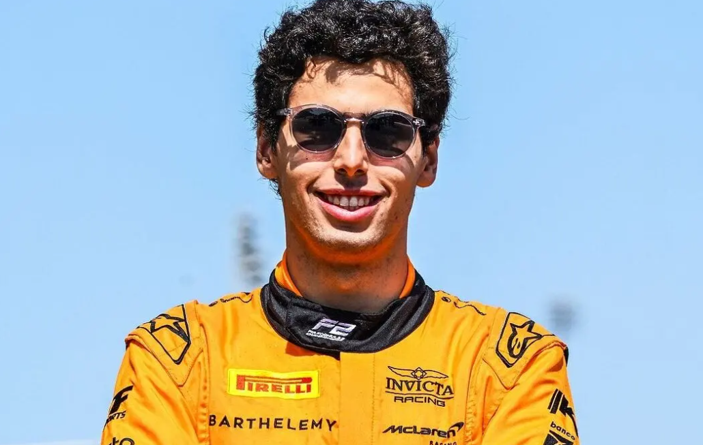
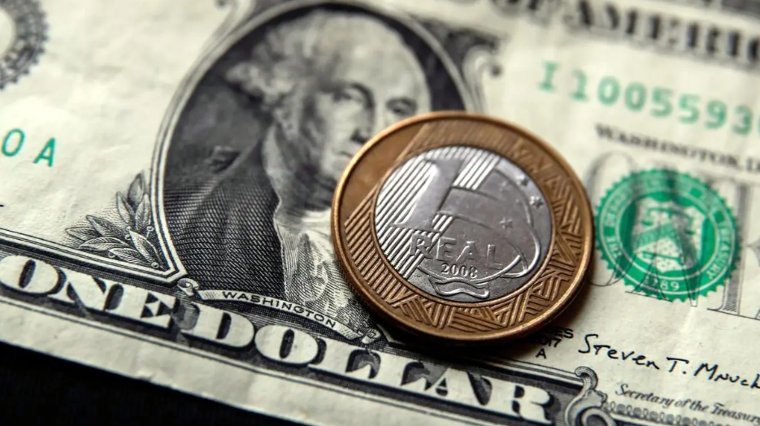

O Brasil volta a ter um piloto representando na formula 1, Gabriel Bortoleto tem sua estreia marcada
para a primeira corrida de 2025. Futuro calouro da F1 em 2025 e 33º piloto do Brasil na categoria, Gabriel Bortoleto
seguirá no próximo ano os passos de dois compatriotas: Felipe Massa, e Felipe Nasr. A dupla de xarás, assim como fará
o jovem campeão da Fórmula 3 de 2023, começou sua trajetória na categoria pela Sauber. E se o caminho de Nasr não durou o
esperado na elite do automobilismo europeu, Massa viveu nela o suficiente para alcançar até um vice-campeonato mundial. Ao
todo, a Sauber já recepcionou três pilotos brasileiros: o primeiro deles foi Pedro Paulo Diniz, que representou a equipe
suíça nas temporadas de 1999 e 2000. Seu melhor resultado foi um sexto lugar, que repetiu nos GPs do Canadá, Inglaterra e
Áustria do primeiro ano de parceria - este, muito afetado por batidas e quebras.
O caminho, porém, não foi fácil para
nenhum dos dois brasileiros que debutaram pelo time de Peter Sauber: Massa, por exemplo, estreou em 2002, um ano após ter
assinado com a Ferrari visando uma contratação futura com o time. Ele abandonou metade das corridas que disputou; em cinco,
por acidentes. Ele teve como melhor resultado um quinto lugar na Espanha, e outras duas sextas colocações nos GPs da
Malásia e Europa - na época, só os seis primeiros pontuavam. Beat Zehnder, na época gerente da Sauber (com experiência de
mais de 500 GPs completados em 2020), revelou ao podcast oficial da F1 há dois anos que Massa teve uma adaptação difícil
na equipe, causando sua não renovação.
O brasileiro também não tinha o domínio técnico necessário para ajudar no desenvolvimento do carro:
- Tivemos alguns problemas com Felipe, tivemos que demiti-lo em 2002. Aí ele voltou em 2004, porque em 2002 foi um
desastre. Ele era uma criança, não concordava em aprender, ouvir conselhos no carro. Depois de 2003, com a temporada
testando muito com a Ferrari ao lado de Michael Schumacher, ele voltou uma pessoa diferente, um piloto diferente, e era
muito rápido.Em 2004, porém, o paulista retornou para a Sauber, com aporte da Ferrari. Fechou seu segundo ano como o
piloto com mais ultrapassagens, garantindo ter aprendido com os erros. Terminou a temporada em 12º lugar, uma posição
atrás do colega Giancarlo Fisichella, conquistando 12 dos 34 pontos da equipe no campeonato de construtores. Massa ainda
ficou na equipe em 2005, desbancando o novo colega e campeão mundial de 1997 Jacques Villeneuve. Já encaminhado para a
Ferrari para substituir o compatriota Rubens Barrichello, ficou de 2006 a 2013 na escuderia.
De lá, ele saiu rumo à Williams com um vice-campeonato de pilotos no bolso, de 2008, e o campeonato de construtores do
mesmo ano. O time fundado por Frank Williams foi o último destino do brasileiro, entre 2014 e 2017. Após 13 anos da
estreia de Massa na F1, foi a vez de Felipe Nasr. Vice-campeão da GP2 Series (atual Fórmula 2) de 2014, o brasileiro
assinou com a Sauber um contrato de dois anos. Mas a estreia do brasiliense foi ameaçada: Giedo van der Garde, reserva,
alegava ter um acordo com o time para ser titular em 2015. O caso foi levado à corte na Austrália; por fim, Nasr ficou
com a vaga.
Ele debutou com um quinto lugar em um caótico GP da Austrália - que só teve 11 concluintes,
tornando-se o primeiro brasileiro a pontuar na primeira corrida disputada na F1. Terminando a temporada em 13º lugar,
cinco posições na frente do colega Marcus Ericsson, o brasileiro conquistou 27 dos 36 pontos da Sauber no ano.
Ao longo das 19 etapas do campeonato, Nasr pontuou em seis corridas, resultados obtidos mesmo que seu desempenho nos
sábados não fossem tão bons: ele largou entre os dez primeiros só em três ocasiões, na Austrália, China e Áustria.
O brasileiro ficou mais uma temporada na Sauber, em 2016. E apesar de sofrer com a queda de rendimento do carro suíço,
foi nono colocado no GP do Brasil, conquistando os dois pontos que tiraram o time da lanterna da F1 e ajudaram a manter a
equipe vive na categoria. Porém, seu contrato não foi renovado, e o alemão Pascal Wehrlein o substituiu em 2017.
Assim como os antecessores, Drugovich não deve pegar uma Sauber em boa fase em 2025 - considerando o atual momento do
time como referência. Das dez equipes do grid de 2024 da F1, a equipe suíça é a única sem nenhum ponto no campeonato,
estando zerada no Mundial de construtores e também com seus pilotos, Valtteri Bottas e Guanyu Zhou.
Além disso,
contratações no corpo técnico do time fundado por Peter Sauber agregarão os esforços rumo aos pontos na F1: o diretor
esportivo da RBR, Jonathan Wheatley, como chefe de equipe; o ex-engenheiro de motores e chefe da Ferrari Mattia Binotto,
como CEO; e o ex-estrategista da Ferrari, Iñaki Rueda, como diretor esportivo.
- A gente sabe que a Sauber tá numa situação que não é muito fácil agora, mas vejo as mudanças que eles estão fazendo,
as pessoas que estão trazendo para o time, tem bastante coisa muito positiva acontecendo aqui dentro. A gente sabe que
não é um projeto de um ou dois anos, vai levar tempo. A gente tem ambição de ganhar, mas não é rápido assim - destacou
Gabriel.
Esportes
Bortoledo confirmado na F1

Economia
Dolar atinge sua máxima histórica

O valor registrado é o maior desde a criação do real. O dólar voltou a subir ante o real nesta
quarta-feira, mesmo com o Banco Central despejando 4 bilhões de dólares no mercado, em leilão no
início da tarde, com as cotações no Brasil acompanhando o avanço firme da moeda norte-americana no
exterior, em mais um dia de “Trump trade”.
Comentários do ministro da Fazenda, Fernando Haddad, no fim da tarde ajudaram a aliviar as cotações.
O dólar subia ante o real neste início de tarde de quarta-feira, em sintonia com o avanço firme da
moeda norte-americana ante boa parte das demais divisas no exterior, recuperando-se das perdas de
mais cedo.
O cancelamento dos dois leilões de linha (venda de dólares com compromisso de recompra no futuro) a serem
realizados pelo Banco Central mais cedo, em função de problemas operacionais, acabou colocando parte dos
investidores novamente na ponta de compra da moeda norte-americana, o que impulsionou as cotações.
Embora o BC tenha realizado os leilões posteriormente, no início da tarde, o dólar à vista permaneceu no
território positivo. Ainda em destaque, o índice de preços ao consumidor (CPI, na sigla em inglês) nos Estados
Unidos subiu 0,2% em outubro ante setembro, mantendo assim a variação do mês anterior. Os dados vieram em linha
com o esperado, uma vez que o consenso LSEG de analistas projetava variação de +0,2% na leitura mensal. Pela
manhã a moeda norte-americana chegou a oscilar em baixa firme, com o mercado à espera dos dois leilões de linha
(venda de dólares com compromisso de recompra) anunciados pelo Banco Central anunciados na véspera. A queda
ocorria na expectativa da injeção de 4 bilhões de dólares no mercado pela manhã, para atender demanda.
Tradicionalmente o BC realiza operações de linha nos últimos meses do ano para suprir a demanda de empresas e
fundos, entre outros, que precisam enviar lucros e dividendos ao exterior.
Pouco depois do horário marcado para as operações, no entanto, o BC anunciou o cancelamento em função de
“problemas operacionais”. Ao mesmo tempo, informou que os leilões ainda seriam realizados, mas em outro horário.
O cancelamento gerou mal-estar no mercado, ainda que o BC tenha deixado claro que as operações seriam
realizadas.
Assim, após marcar a cotação mínima de 5,7222 reais (-0,89%) às 10h38, o dólar à vista migrou para o território
positivo.
No início da tarde, o BC finalmente realizou os leilões, vendendo o total de 4 bilhões de dólares ofertados — 2
bilhões de dólares com data de recompra em 2 de abril de 2025 e 2 bilhões com recompra para 2 de julho de 2025.
Mesmo com a colocação, o dólar seguiu no território positivo.
“Não fazia sentido (a alta do dólar com o cancelamento do leilão pelo BC), porque anunciaram que ainda seria
feito. A alta do dólar tem mais de exterior do que de leilão”, ponderou durante a tarde Adauto Lima,
economista-chefe da Western Asset.
Lá fora, o avanço da moeda norte-americana ocorria ainda em função da vitória de Donald Trump na eleição
presidencial dos EUA na semana passada. Isso tem gerado expectativas de tarifas de importação potencialmente
inflacionárias e outras medidas que favorecem o dólar.
A demora do governo Lula em anunciar seu pacote na área fiscal também sustentava o dólar no Brasil. Às 15h48 a
moeda norte-americana à vista marcou a cotação máxima de 5,8167 reais (+0,75%).
Entretenimento
Linkin Park tem data confirmada para show em São Paulo.

A banda que se juntou novamente confirmou que irá tocar dois dias em São Paulo. Os fãs de rock já podem se
preparar para uma noite histórica, embalada por muitos hits e com gostinho de memória afetiva na transmissão
ao vivo do show do Linkin Park.
Diretamente de São Paulo, Titi Müller vai comandar a cobertura, trazendo entrevistas e bastidores do espetáculo
que promete ficar marcado na história.Sucesso de bilheteria, os ingressos para a grande noite esgotaram em
menos de 40 minutos, mas o público de casa vai poder curtir todos os detalhes do show nas telas do canal e da
plataforma.
Clássicos como “Numb”, “Faint”, “In The End”, além de lançamentos do novo álbum que também chega às plataformas
na sexta, fazem parte do repertório.A banda voltou a se reunir depois de um hiato de sete anos, após morte do
vocalista Chester Bennington, em 2017. Eles também anunciaram um novo álbum, intitulado "From Zero", com
lançamento marcado para 15 de novembro, mesmo dia da apresentação em São Paulo.
No início de setembro, o Linkin Park promoveu uma transmissão ao vivo na rede social contando sobre o retorno
da banda. O primeiro show aconteceu no dia 11, em Los Angeles (EUA) e eles ainda passam por Alemanha, Reino
Unido, Coreia do Sul e Colômbia.
- Datas dos Shows:
- 15 de novembro
- 16 de novembro
Tecnologia
Bitcoin ultrapassa sua máxima histórica e atinge U$ 89000,00
Criptomoeda atinge seu maior valor da história e ainda tem potencial para continuar subindo. Nesta quarta-feira,
13, o bitcoin atingiu uma nova máxima histórica acima de US$ 93 mil. A maior criptomoeda do mercado vem em uma
onda de recordes de preço desde a última quarta-feira, 6, com a vitória de Donald Trump nas eleições
norte-americanas.
No momento, o bitcoin é cotado a US$ 92.174, com alta de mais de 5,4% apenas nas últimas 24 horas, de acordo
com dados do CoinMarketCap. A principal criptomoeda chegou a atingir US$ 93.434, seu maior preço da história,
de acordo com dados do CoinGecko.
Não é a primeira vez que o bitcoin bateu uma nova máxima histórica.
Desde a última quarta-feira, 6, com a vitória de Donald Trump, isso aconteceu mais de 15 vezes.
Em apenas uma semana, preço do bitcoin saiu da casa dos US$ 70 mil para os atuais US$ 91 mil. Autointitulado
“criptopresidente”, Donald Trump fez uma série de promessas de campanha que envolvem até mesmo transformar os
Estados Unidos na “capital mundial de cripto”.
Com a sua eleição, investidores e especialistas estão otimistas com o futuro do setor no país, que é a maior
economia do mundo. Desde então, o mercado cripto acumula recordes em diversas áreas.
No momento, o Índice de Medo e Ganância, utilizado para medir o sentimento do mercado cripto, sinaliza
“ganância extrema” em 84 pontos.